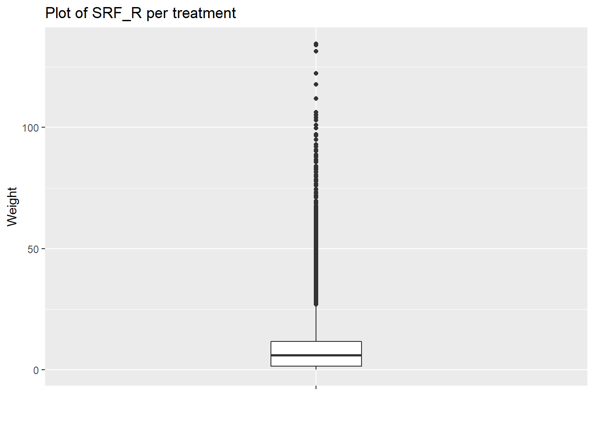
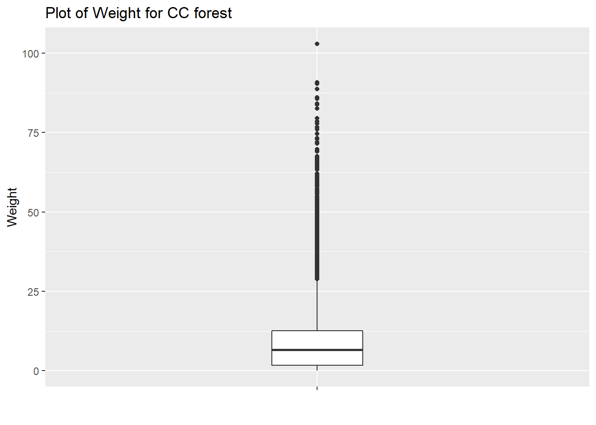
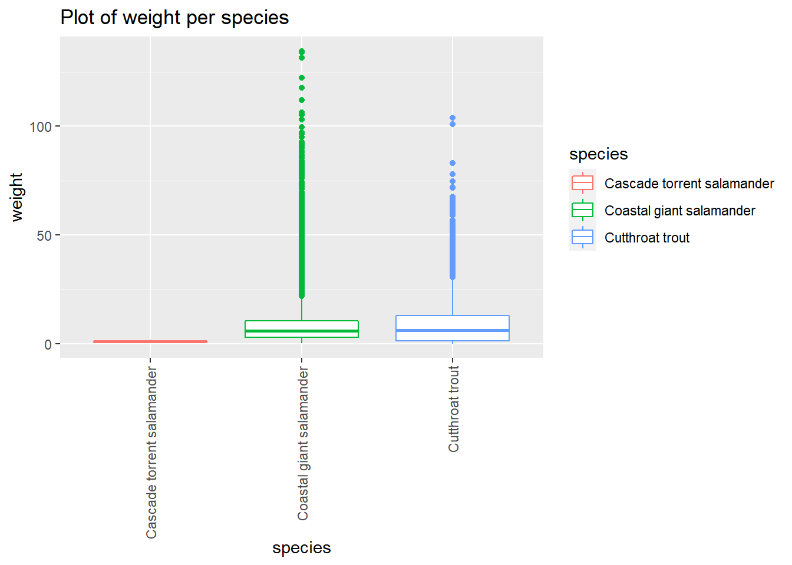
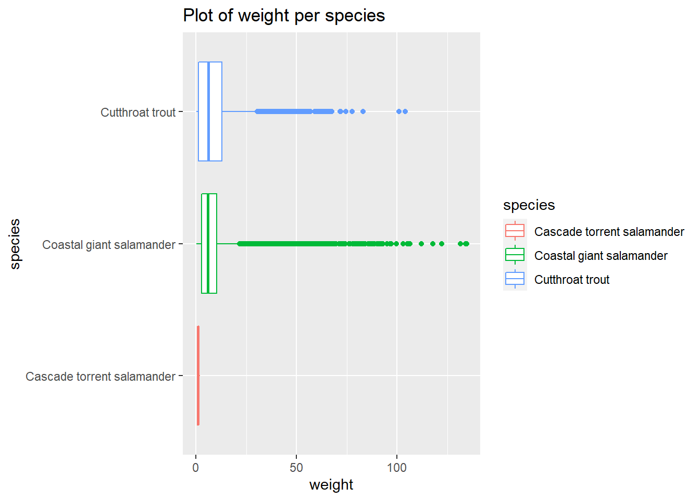
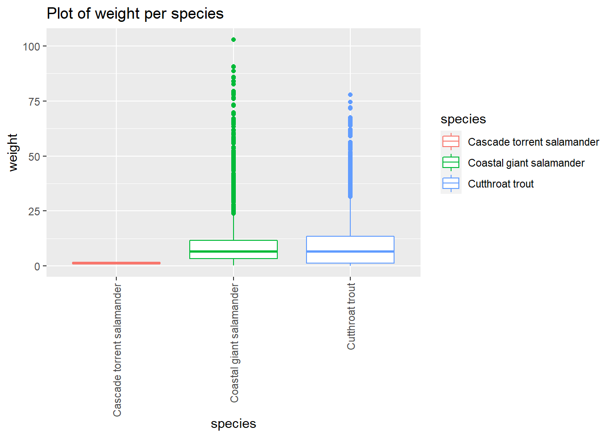
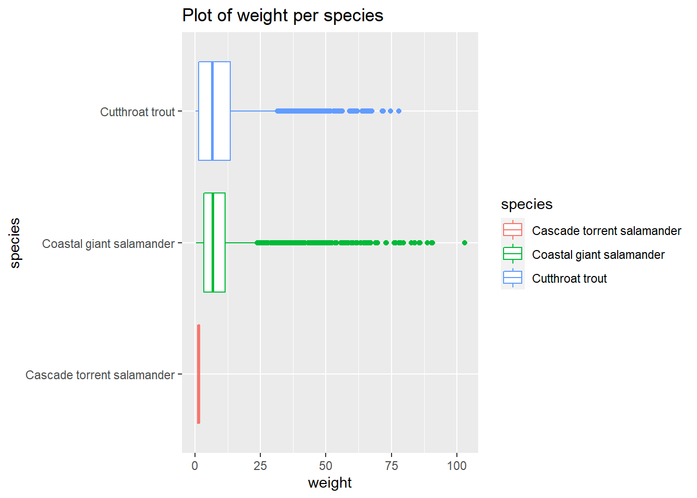

Statistiques descriptives : moyenne, médiane,…
Librairies
On utilise ici la librairie tidyverse et gtsummary
library(tidyverse)
library(gtsummary)Import du jeu de données and_vertebrates
La documentation est ici : https://lter.github.io/lterdatasampler/index.html
library(lterdatasampler)Il s’agit de mesures de tailles et de poids effectuées sur des
invertébrés (Truites fardées côtière et Salamandres) dans une forêt de
l’Oregon aux USA.
Dans cette section, nous utiliserons les variables du jeu de données
and_vertebrates contenu dans le package lterdatasampler
:
- section : type de forêt, CC= clear cut forest,OG = upstream
old growth coniferous forest
- weight_g : poids en gramme
- species : nom de l’espèce capturé (Cutthroat trout ; Coastal
giant salamander ; Cascade torrent salamander)
Décrire une variable continue
On s’intéresse au poids des invertébrés, la variable weight_g. On va calculer la moyenne, l’écart-type, le minimum, le premier quartile, la médiane, le troisième quartile, le maximum, le nombre d’observation, le nombre de données renseignées et le nombre de données manquantes.
Codes
Une commande par indicateur [base R]
mean(and_vertebrates$weight_g,na.rm = T) # Moyenne## [1] 8.902859sd(and_vertebrates$weight_g,na.rm = T) # Ecart-Type## [1] 10.67628min(and_vertebrates$weight_g,na.rm = T) # Min## [1] 0.09quantile(and_vertebrates$weight_g,probs=0.25,na.rm = T) # Q1## 25%
## 1.51quantile(and_vertebrates$weight_g,probs=0.5,na.rm = T) # Médiane## 50%
## 6.05quantile(and_vertebrates$weight_g,probs=0.75,na.rm = T) # Q3## 75%
## 11.66max(and_vertebrates$weight_g,na.rm = T) # Max## [1] 134.59length(and_vertebrates$weight_g) # Nombre valeur## [1] 32209sum(!is.na(and_vertebrates$weight_g)) #Nombre NON manquant## [1] 18941sum(is.na(and_vertebrates$weight_g)) #Nombre manquant## [1] 13268Une commande par indicateur [Tidyverse]
and_vertebrates %>%
summarise(
moyenne=mean(weight_g,na.rm = T),
`écart-type`=sd(weight_g,na.rm = T),
minimum=min(weight_g,na.rm = T),
q1=quantile(weight_g,na.rm = T,probs=0.25),
mediane=quantile(weight_g,na.rm = T,probs=0.55),
q3=quantile(weight_g,na.rm = T,probs=0.75),
maximum=max(weight_g,na.rm = T),
N=n(),
n_obs=sum(!is.na(weight_g)),
n_miss_obs=sum(is.na(weight_g))
)## # A tibble: 1 × 10
## moyenne `écart-type` minimum q1 mediane q3 maximum N n_obs
## <dbl> <dbl> <dbl> <dbl> <dbl> <dbl> <dbl> <int> <int>
## 1 8.90 10.7 0.09 1.51 6.92 11.7 135. 32209 18941
## # … with 1 more variable: n_miss_obs <int>En une seule commande
summary(and_vertebrates$weight_g,na.rm = T) # Moyenne## Min. 1st Qu. Median Mean 3rd Qu. Max. NA's
## 0.090 1.510 6.050 8.903 11.660 134.590 13268En joli
# Statistique descritptive de weight_g VERY BEAUTIFUL [librairie gtsummary]
library(gtsummary)
and_vertebrates %>%
tbl_summary(
include = weight_g,
type = all_continuous() ~ "continuous2",
statistic = all_continuous() ~ c("{N_nonmiss}",
"{N_miss}",
"{min}",
"{p25}",
"{median}",
"{p75}",
"{max}",
"{mean}",
"{sd}"),
missing = "no"
)| Characteristic | N = 32,209 |
|---|---|
| weight_g | |
| N | 18,941 |
| N missing | 13,268 |
| Minimum | 0 |
| 25% | 2 |
| Median | 6 |
| 75% | 12 |
| Maximum | 135 |
| Mean | 9 |
| SD | 11 |
En graphique
ggplot(and_vertebrates) +
aes(x="",y=weight_g) +
geom_boxplot(width=0.2) +
labs(title="Plot of SRF_R per treatment",x="",y="Weight")
Décrire une variable continue d’un sous-groupe de notre jeu de données
On souhaite maintenant calculer les même indicateurs, la moyenne, l’écartype, et autre indicateur de la variable weight_g mais uniquement pour les invertébrés capturés dans les forêt coupé à blanc ie pour lesquelles la valeur de la variable section est égale à CC pour Clear Cut forest.
Codes
Une commande par indicateur [base R]
mean(and_vertebrates$weight_g[and_vertebrates$section=="CC"],na.rm = T) # Moyenne## [1] 9.508932sd(and_vertebrates$weight_g[and_vertebrates$section=="CC"],na.rm = T) # Ecart-Type## [1] 10.7977min(and_vertebrates$weight_g[and_vertebrates$section=="CC"],na.rm = T) # Min## [1] 0.09quantile(and_vertebrates$weight_g[and_vertebrates$section=="CC"],probs=0.25,na.rm = T) # Q1## 25%
## 1.655quantile(and_vertebrates$weight_g[and_vertebrates$section=="CC"],probs=0.5,na.rm = T) # Médiane## 50%
## 6.6quantile(and_vertebrates$weight_g[and_vertebrates$section=="CC"],probs=0.75,na.rm = T) # Q3## 75%
## 12.55max(and_vertebrates$weight_g[and_vertebrates$section=="CC"],na.rm = T) # Max## [1] 102.99length(and_vertebrates$weight_g[and_vertebrates$section=="CC"]) # Nombre valeur## [1] 16490sum(!is.na(and_vertebrates$weight_g[and_vertebrates$section=="CC"])) #Nombre NON manquant## [1] 9831sum(is.na(and_vertebrates$weight_g[and_vertebrates$section=="CC"])) #Nombre manquant## [1] 6659Une commande par indicateur [Tidyverse]
and_vertebrates %>%
filter(section=="CC") %>%
summarise(
moyenne=mean(weight_g,na.rm = T),
`écart-type`=sd(weight_g,na.rm = T),
minimum=min(weight_g,na.rm = T),
q1=quantile(weight_g,na.rm = T,probs=0.25),
mediane=quantile(weight_g,na.rm = T,probs=0.55),
q3=quantile(weight_g,na.rm = T,probs=0.75),
maximum=max(weight_g,na.rm = T),
N=n(),
n_obs=sum(!is.na(weight_g)),
n_miss_obs=sum(is.na(weight_g))
)## # A tibble: 1 × 10
## moyenne `écart-type` minimum q1 mediane q3 maximum N n_obs
## <dbl> <dbl> <dbl> <dbl> <dbl> <dbl> <dbl> <int> <int>
## 1 9.51 10.8 0.09 1.65 7.54 12.6 103. 16490 9831
## # … with 1 more variable: n_miss_obs <int>En une seule commande
summary(and_vertebrates$weight_g[and_vertebrates$section=="CC"],na.rm = T) # Moyenne## Min. 1st Qu. Median Mean 3rd Qu. Max. NA's
## 0.090 1.655 6.600 9.509 12.550 102.990 6659En joli
librairie gtsummary
and_vertebrates %>%
filter(section=="CC") %>%
tbl_summary(
include = weight_g,
type = all_continuous() ~ "continuous2",
statistic = all_continuous() ~ c("{N_nonmiss}",
"{N_miss}",
"{min}",
"{p25}",
"{median}",
"{p75}",
"{max}",
"{mean}",
"{sd}"),
missing = "no"
) | Characteristic | N = 16,490 |
|---|---|
| weight_g | |
| N | 9,831 |
| N missing | 6,659 |
| Minimum | 0 |
| 25% | 2 |
| Median | 7 |
| 75% | 13 |
| Maximum | 103 |
| Mean | 10 |
| SD | 11 |
En graphique
# Boxplot
and_vertebrates %>%
filter(section=="CC") %>%
ggplot() +
aes(x="",y=weight_g) +
geom_boxplot(width=0.2) +
labs(title="Plot of Weight for CC forest",x="",y="Weight")
Décrire une variable continue en fonction d’une variable catégorielle
On va maintenant décrire le poids des invertébrés en fonction de l’espèce capturé (Cutthroat trout ; Coastal giant salamander ; Cascade torrent salamander) en utilisant la variable species.
Codes
Une commande par indicateur [base R 1]
aggregate(x = and_vertebrates$weight_g, by = list(and_vertebrates$species), FUN = mean, na.rm = TRUE) # Moyenne## Group.1 x
## 1 Cascade torrent salamander 1.082222
## 2 Coastal giant salamander 9.031720
## 3 Cutthroat trout 8.843599aggregate(x = and_vertebrates$weight_g, by = list(and_vertebrates$species), FUN = sd, na.rm = TRUE) # Ecart-Type## Group.1 x
## 1 Cascade torrent salamander 0.4727255
## 2 Coastal giant salamander 12.1137205
## 3 Cutthroat trout 9.8758610aggregate(x = and_vertebrates$weight_g, by = list(and_vertebrates$species), FUN = min, na.rm = TRUE) # Min## Group.1 x
## 1 Cascade torrent salamander 0.50
## 2 Coastal giant salamander 0.29
## 3 Cutthroat trout 0.09aggregate(x = and_vertebrates$weight_g, by = list(and_vertebrates$species), FUN = quantile, probs=0.25, na.rm = TRUE) # Q1## Group.1 x
## 1 Cascade torrent salamander 0.8
## 2 Coastal giant salamander 2.9
## 3 Cutthroat trout 1.2aggregate(x = and_vertebrates$weight_g, by = list(and_vertebrates$species), FUN = quantile, probs=0.55, na.rm = TRUE) # Médiane## Group.1 x
## 1 Cascade torrent salamander 1.044
## 2 Coastal giant salamander 6.700
## 3 Cutthroat trout 7.050aggregate(x = and_vertebrates$weight_g, by = list(and_vertebrates$species), FUN = quantile, probs=0.75, na.rm = TRUE) # Q3## Group.1 x
## 1 Cascade torrent salamander 1.30
## 2 Coastal giant salamander 10.42
## 3 Cutthroat trout 12.90aggregate(x = and_vertebrates$weight_g, by = list(and_vertebrates$species), FUN = max, na.rm = TRUE) # Max## Group.1 x
## 1 Cascade torrent salamander 1.95
## 2 Coastal giant salamander 134.59
## 3 Cutthroat trout 104.00aggregate(x = and_vertebrates$weight_g, by = list(and_vertebrates$species), FUN = length) # Nombre valeur## Group.1 x
## 1 Cascade torrent salamander 15
## 2 Coastal giant salamander 11758
## 3 Cutthroat trout 20433table(and_vertebrates$species[!is.na(and_vertebrates$weight_g)]) #Nombre NON manquant##
## Cascade torrent salamander Coastal giant salamander
## 9 6338
## Cutthroat trout
## 12594table(and_vertebrates$species[is.na(and_vertebrates$weight_g)]) #Nombre manquant##
## Cascade torrent salamander Coastal giant salamander
## 6 5420
## Cutthroat trout
## 7839Une commande par indicateur [base R 2]
tapply(and_vertebrates$weight_g, and_vertebrates$species, FUN = mean, na.rm = TRUE) # Moyenne## Cascade torrent salamander Coastal giant salamander
## 1.082222 9.031720
## Cutthroat trout
## 8.843599tapply(and_vertebrates$weight_g, and_vertebrates$species, FUN = sd, na.rm = TRUE) # Ecart-Type## Cascade torrent salamander Coastal giant salamander
## 0.4727255 12.1137205
## Cutthroat trout
## 9.8758610tapply(and_vertebrates$weight_g, and_vertebrates$species, FUN = min, na.rm = TRUE) # Min## Cascade torrent salamander Coastal giant salamander
## 0.50 0.29
## Cutthroat trout
## 0.09tapply(and_vertebrates$weight_g, and_vertebrates$species, FUN = quantile, probs=0.25, na.rm = TRUE) # Q1## Cascade torrent salamander Coastal giant salamander
## 0.8 2.9
## Cutthroat trout
## 1.2tapply(and_vertebrates$weight_g, and_vertebrates$species, FUN = quantile, probs=0.55, na.rm = TRUE) # Médiane## Cascade torrent salamander Coastal giant salamander
## 1.044 6.700
## Cutthroat trout
## 7.050tapply(and_vertebrates$weight_g, and_vertebrates$species, FUN = quantile, probs=0.75, na.rm = TRUE) # Q3## Cascade torrent salamander Coastal giant salamander
## 1.30 10.42
## Cutthroat trout
## 12.90tapply(and_vertebrates$weight_g, and_vertebrates$species, FUN = max, na.rm = TRUE) # Max## Cascade torrent salamander Coastal giant salamander
## 1.95 134.59
## Cutthroat trout
## 104.00tapply(and_vertebrates$weight_g, and_vertebrates$species, FUN = length) # Nombre valeur## Cascade torrent salamander Coastal giant salamander
## 15 11758
## Cutthroat trout
## 20433table(and_vertebrates$species[!is.na(and_vertebrates$weight_g)]) #Nombre NON manquant##
## Cascade torrent salamander Coastal giant salamander
## 9 6338
## Cutthroat trout
## 12594table(and_vertebrates$species[is.na(and_vertebrates$weight_g)]) #Nombre manquant##
## Cascade torrent salamander Coastal giant salamander
## 6 5420
## Cutthroat trout
## 7839Avec Tidyverse 1
and_vertebrates %>% group_by(species) %>% summarise(mean(weight_g,na.rm=T))## # A tibble: 4 × 2
## species `mean(weight_g, na.rm = T)`
## <chr> <dbl>
## 1 Cascade torrent salamander 1.08
## 2 Coastal giant salamander 9.03
## 3 Cutthroat trout 8.84
## 4 <NA> NaNand_vertebrates %>% group_by(species) %>% summarise(sd(weight_g,na.rm=T))## # A tibble: 4 × 2
## species `sd(weight_g, na.rm = T)`
## <chr> <dbl>
## 1 Cascade torrent salamander 0.473
## 2 Coastal giant salamander 12.1
## 3 Cutthroat trout 9.88
## 4 <NA> NAand_vertebrates %>% group_by(species) %>% summarise(min(weight_g,na.rm=T))## # A tibble: 4 × 2
## species `min(weight_g, na.rm = T)`
## <chr> <dbl>
## 1 Cascade torrent salamander 0.5
## 2 Coastal giant salamander 0.29
## 3 Cutthroat trout 0.09
## 4 <NA> Infand_vertebrates %>% group_by(species) %>% summarise(quantile(weight_g,probs=0.25,na.rm=T))## # A tibble: 4 × 2
## species `quantile(weight_g, probs = 0.25, na.rm = T)`
## <chr> <dbl>
## 1 Cascade torrent salamander 0.8
## 2 Coastal giant salamander 2.9
## 3 Cutthroat trout 1.2
## 4 <NA> NAand_vertebrates %>% group_by(species) %>% summarise(quantile(weight_g,probs=0.5,na.rm=T))## # A tibble: 4 × 2
## species `quantile(weight_g, probs = 0.5, na.rm = T)`
## <chr> <dbl>
## 1 Cascade torrent salamander 0.94
## 2 Coastal giant salamander 5.9
## 3 Cutthroat trout 6.15
## 4 <NA> NAand_vertebrates %>% group_by(species) %>% summarise(quantile(weight_g,probs=0.75,na.rm=T))## # A tibble: 4 × 2
## species `quantile(weight_g, probs = 0.75, na.rm = T)`
## <chr> <dbl>
## 1 Cascade torrent salamander 1.3
## 2 Coastal giant salamander 10.4
## 3 Cutthroat trout 12.9
## 4 <NA> NAand_vertebrates %>% group_by(species) %>% summarise(max(weight_g,na.rm=T))## # A tibble: 4 × 2
## species `max(weight_g, na.rm = T)`
## <chr> <dbl>
## 1 Cascade torrent salamander 1.95
## 2 Coastal giant salamander 135.
## 3 Cutthroat trout 104
## 4 <NA> -Infand_vertebrates %>% group_by(species) %>% count() # Nombre valeur## # A tibble: 4 × 2
## # Groups: species [4]
## species n
## <chr> <int>
## 1 Cascade torrent salamander 15
## 2 Coastal giant salamander 11758
## 3 Cutthroat trout 20433
## 4 <NA> 3and_vertebrates %>% group_by(species) %>% summarise(sum(!is.na(weight_g))) #Nombre NON manquant## # A tibble: 4 × 2
## species `sum(!is.na(weight_g))`
## <chr> <int>
## 1 Cascade torrent salamander 9
## 2 Coastal giant salamander 6338
## 3 Cutthroat trout 12594
## 4 <NA> 0and_vertebrates %>% group_by(species) %>% summarise(sum(is.na(weight_g))) #Nombre manquant## # A tibble: 4 × 2
## species `sum(is.na(weight_g))`
## <chr> <int>
## 1 Cascade torrent salamander 6
## 2 Coastal giant salamander 5420
## 3 Cutthroat trout 7839
## 4 <NA> 3Avec Tidyverse 2
and_vertebrates %>%
group_by(species) %>%
summarise(mean=mean(weight_g,na.rm=T),
sd=sd(weight_g,na.rm=T),
min=min(weight_g,na.rm=T),
q1=quantile(weight_g,probs=0.25,na.rm=T),
mediane=quantile(weight_g,probs=0.5,na.rm=T),
q3=quantile(weight_g,probs=0.75,na.rm=T),
max=max(weight_g,na.rm=T),
N=n(),
n=sum(!is.na(weight_g)),
missing=sum(is.na(weight_g)))## # A tibble: 4 × 11
## species mean sd min q1 mediane q3 max N n missing
## <chr> <dbl> <dbl> <dbl> <dbl> <dbl> <dbl> <dbl> <int> <int> <int>
## 1 Cascade … 1.08 0.473 0.5 0.8 0.94 1.3 1.95 15 9 6
## 2 Coastal … 9.03 12.1 0.29 2.9 5.9 10.4 135. 11758 6338 5420
## 3 Cutthroa… 8.84 9.88 0.09 1.2 6.15 12.9 104 20433 12594 7839
## 4 <NA> NaN NA Inf NA NA NA -Inf 3 0 3En une seule commande [base R]
tapply(and_vertebrates$weight_g, and_vertebrates$species, summary)## $`Cascade torrent salamander`
## Min. 1st Qu. Median Mean 3rd Qu. Max. NA's
## 0.500 0.800 0.940 1.082 1.300 1.950 6
##
## $`Coastal giant salamander`
## Min. 1st Qu. Median Mean 3rd Qu. Max. NA's
## 0.290 2.900 5.900 9.032 10.420 134.590 5420
##
## $`Cutthroat trout`
## Min. 1st Qu. Median Mean 3rd Qu. Max. NA's
## 0.090 1.200 6.150 8.844 12.900 104.000 7839En une seule commande [tidyverse]
and_vertebrates %>% select(weight_g,species) %>% split(.$species) %>% map(summary)## $`Cascade torrent salamander`
## weight_g species
## Min. :0.500 Length:15
## 1st Qu.:0.800 Class :character
## Median :0.940 Mode :character
## Mean :1.082
## 3rd Qu.:1.300
## Max. :1.950
## NA's :6
##
## $`Coastal giant salamander`
## weight_g species
## Min. : 0.290 Length:11758
## 1st Qu.: 2.900 Class :character
## Median : 5.900 Mode :character
## Mean : 9.032
## 3rd Qu.: 10.420
## Max. :134.590
## NA's :5420
##
## $`Cutthroat trout`
## weight_g species
## Min. : 0.090 Length:20433
## 1st Qu.: 1.200 Class :character
## Median : 6.150 Mode :character
## Mean : 8.844
## 3rd Qu.: 12.900
## Max. :104.000
## NA's :7839En beau
# [librairie gtsummary]
and_vertebrates %>%
tbl_summary(
include = weight_g,
by = species,
type = all_continuous() ~ "continuous2",
statistic = all_continuous() ~ c("{N_nonmiss}",
"{N_miss}",
"{min}",
"{p25}",
"{median}",
"{p75}",
"{max}",
"{mean}",
"{sd}"),
missing = "no"
) %>%
add_overall()| Characteristic | Overall, N = 32,206 | Cascade torrent salamander, N = 15 | Coastal giant salamander, N = 11,758 | Cutthroat trout, N = 20,433 |
|---|---|---|---|---|
| weight_g | ||||
| N | 18,941 | 9 | 6,338 | 12,594 |
| N missing | 13,265 | 6 | 5,420 | 7,839 |
| Minimum | 0 | 1 | 0 | 0 |
| 25% | 2 | 1 | 3 | 1 |
| Median | 6 | 1 | 6 | 6 |
| 75% | 12 | 1 | 10 | 13 |
| Maximum | 135 | 2 | 135 | 104 |
| Mean | 9 | 1 | 9 | 9 |
| SD | 11 | 0 | 12 | 10 |
En graphique
and_vertebrates %>%
drop_na(weight_g) %>%
ggplot() +
aes(x=species, y=weight_g,color=species) +
geom_boxplot() +
labs(title="Plot of weight per species",x="species", y = "weight") +
theme(axis.text.x = element_text(angle = 90, vjust = 0.5, hjust=1))
and_vertebrates %>%
drop_na(weight_g) %>%
ggplot() +
aes(x=species, y=weight_g,color=species) +
geom_boxplot() +
labs(title="Plot of weight per species",x="species", y = "weight") +
coord_flip() 
Décrire une variable continue en fonction d’une variable catégorielle d’un sous-groupe de notre jeu de données
On va maintenant décrire le poids des invertébrés en fonction de l’espèce capturé (Cutthroat trout ; Coastal giant salamander ; Cascade torrent salamander) en utilisant la variable species mais uniquement pour les invertébrés capturés dans les forêt coupé à blanc ie pour lesquelles la valeur de la variable section est égale à CC pour Clear Cut forest.
Codes
Une commande par indicateur [base R 1]
aggregate(x = and_vertebrates$weight_g[and_vertebrates$section=="CC"], by = list(and_vertebrates$species[and_vertebrates$section=="CC"]), FUN = mean, na.rm = TRUE) # Moyenne## Group.1 x
## 1 Cascade torrent salamander 1.318000
## 2 Coastal giant salamander 9.810634
## 3 Cutthroat trout 9.380571aggregate(x = and_vertebrates$weight_g[and_vertebrates$section=="CC"], by = list(and_vertebrates$species[and_vertebrates$section=="CC"]), FUN = sd, na.rm = TRUE) # Ecart-Type## Group.1 x
## 1 Cascade torrent salamander 0.4718262
## 2 Coastal giant salamander 11.4887686
## 3 Cutthroat trout 10.4751060aggregate(x = and_vertebrates$weight_g[and_vertebrates$section=="CC"], by = list(and_vertebrates$species[and_vertebrates$section=="CC"]), FUN = min, na.rm = TRUE) # Min## Group.1 x
## 1 Cascade torrent salamander 0.80
## 2 Coastal giant salamander 0.29
## 3 Cutthroat trout 0.09aggregate(x = and_vertebrates$weight_g[and_vertebrates$section=="CC"], by = list(and_vertebrates$species[and_vertebrates$section=="CC"]), FUN = quantile, probs=0.25, na.rm = TRUE) # Q1## Group.1 x
## 1 Cascade torrent salamander 0.94
## 2 Coastal giant salamander 3.40
## 3 Cutthroat trout 1.30aggregate(x = and_vertebrates$weight_g[and_vertebrates$section=="CC"], by = list(and_vertebrates$species[and_vertebrates$section=="CC"]), FUN = quantile, probs=0.55, na.rm = TRUE) # Médiane## Group.1 x
## 1 Cascade torrent salamander 1.3600
## 2 Coastal giant salamander 7.6585
## 3 Cutthroat trout 7.4900aggregate(x = and_vertebrates$weight_g[and_vertebrates$section=="CC"], by = list(and_vertebrates$species[and_vertebrates$section=="CC"]), FUN = quantile, probs=0.75, na.rm = TRUE) # Q3## Group.1 x
## 1 Cascade torrent salamander 1.6
## 2 Coastal giant salamander 11.5
## 3 Cutthroat trout 13.4aggregate(x = and_vertebrates$weight_g[and_vertebrates$section=="CC"], by = list(and_vertebrates$species[and_vertebrates$section=="CC"]), FUN = max, na.rm = TRUE) # Max## Group.1 x
## 1 Cascade torrent salamander 1.95
## 2 Coastal giant salamander 102.99
## 3 Cutthroat trout 77.78aggregate(x = and_vertebrates$weight_g[and_vertebrates$section=="CC"], by = list(and_vertebrates$species[and_vertebrates$section=="CC"]), FUN = length) # Nombre valeur## Group.1 x
## 1 Cascade torrent salamander 9
## 2 Coastal giant salamander 5406
## 3 Cutthroat trout 11073table(and_vertebrates$species[and_vertebrates$section=="CC" & !is.na(and_vertebrates$weight_g)]) #Nombre NON manquant##
## Cascade torrent salamander Coastal giant salamander
## 5 3028
## Cutthroat trout
## 6798table(and_vertebrates$species[and_vertebrates$section=="CC" & is.na(and_vertebrates$weight_g)]) #Nombre manquant##
## Cascade torrent salamander Coastal giant salamander
## 4 2378
## Cutthroat trout
## 4275Une commande par indicateur [base R 2]
tapply(and_vertebrates$weight_g[and_vertebrates$section=="CC"], and_vertebrates$species[and_vertebrates$section=="CC"], FUN = mean, na.rm = TRUE) # Moyenne## Cascade torrent salamander Coastal giant salamander
## 1.318000 9.810634
## Cutthroat trout
## 9.380571tapply(and_vertebrates$weight_g[and_vertebrates$section=="CC"], and_vertebrates$species[and_vertebrates$section=="CC"], FUN = sd, na.rm = TRUE) # Ecart-Type## Cascade torrent salamander Coastal giant salamander
## 0.4718262 11.4887686
## Cutthroat trout
## 10.4751060tapply(and_vertebrates$weight_g[and_vertebrates$section=="CC"], and_vertebrates$species[and_vertebrates$section=="CC"], FUN = min, na.rm = TRUE) # Min## Cascade torrent salamander Coastal giant salamander
## 0.80 0.29
## Cutthroat trout
## 0.09tapply(and_vertebrates$weight_g[and_vertebrates$section=="CC"], and_vertebrates$species[and_vertebrates$section=="CC"], FUN = quantile, probs=0.25, na.rm = TRUE) # Q1## Cascade torrent salamander Coastal giant salamander
## 0.94 3.40
## Cutthroat trout
## 1.30tapply(and_vertebrates$weight_g[and_vertebrates$section=="CC"], and_vertebrates$species[and_vertebrates$section=="CC"], FUN = quantile, probs=0.55, na.rm = TRUE) # Médiane## Cascade torrent salamander Coastal giant salamander
## 1.3600 7.6585
## Cutthroat trout
## 7.4900tapply(and_vertebrates$weight_g[and_vertebrates$section=="CC"], and_vertebrates$species[and_vertebrates$section=="CC"], FUN = quantile, probs=0.75, na.rm = TRUE) # Q3## Cascade torrent salamander Coastal giant salamander
## 1.6 11.5
## Cutthroat trout
## 13.4tapply(and_vertebrates$weight_g[and_vertebrates$section=="CC"], and_vertebrates$species[and_vertebrates$section=="CC"], FUN = max, na.rm = TRUE) # Max## Cascade torrent salamander Coastal giant salamander
## 1.95 102.99
## Cutthroat trout
## 77.78tapply(and_vertebrates$weight_g[and_vertebrates$section=="CC"], and_vertebrates$species[and_vertebrates$section=="CC"], FUN = length) # Nombre valeur## Cascade torrent salamander Coastal giant salamander
## 9 5406
## Cutthroat trout
## 11073table(and_vertebrates$species[and_vertebrates$section=="CC" & !is.na(and_vertebrates$weight_g)]) #Nombre NON manquant##
## Cascade torrent salamander Coastal giant salamander
## 5 3028
## Cutthroat trout
## 6798table(and_vertebrates$species[and_vertebrates$section=="CC" & is.na(and_vertebrates$weight_g)]) #Nombre manquant##
## Cascade torrent salamander Coastal giant salamander
## 4 2378
## Cutthroat trout
## 4275Avec Tidyverse 1
and_vertebrates %>% filter(section=="CC") %>% group_by(species) %>% summarise(mean(weight_g,na.rm=T))## # A tibble: 4 × 2
## species `mean(weight_g, na.rm = T)`
## <chr> <dbl>
## 1 Cascade torrent salamander 1.32
## 2 Coastal giant salamander 9.81
## 3 Cutthroat trout 9.38
## 4 <NA> NaNand_vertebrates %>% filter(section=="CC") %>% group_by(species) %>% summarise(sd(weight_g,na.rm=T))## # A tibble: 4 × 2
## species `sd(weight_g, na.rm = T)`
## <chr> <dbl>
## 1 Cascade torrent salamander 0.472
## 2 Coastal giant salamander 11.5
## 3 Cutthroat trout 10.5
## 4 <NA> NAand_vertebrates %>% filter(section=="CC") %>% group_by(species) %>% summarise(min(weight_g,na.rm=T))## # A tibble: 4 × 2
## species `min(weight_g, na.rm = T)`
## <chr> <dbl>
## 1 Cascade torrent salamander 0.8
## 2 Coastal giant salamander 0.29
## 3 Cutthroat trout 0.09
## 4 <NA> Infand_vertebrates %>% filter(section=="CC") %>% group_by(species) %>% summarise(quantile(weight_g,probs=0.25,na.rm=T))## # A tibble: 4 × 2
## species `quantile(weight_g, probs = 0.25, na.rm = T)`
## <chr> <dbl>
## 1 Cascade torrent salamander 0.94
## 2 Coastal giant salamander 3.4
## 3 Cutthroat trout 1.3
## 4 <NA> NAand_vertebrates %>% filter(section=="CC") %>% group_by(species) %>% summarise(quantile(weight_g,probs=0.5,na.rm=T))## # A tibble: 4 × 2
## species `quantile(weight_g, probs = 0.5, na.rm = T)`
## <chr> <dbl>
## 1 Cascade torrent salamander 1.3
## 2 Coastal giant salamander 6.7
## 3 Cutthroat trout 6.6
## 4 <NA> NAand_vertebrates %>% filter(section=="CC") %>% group_by(species) %>% summarise(quantile(weight_g,probs=0.75,na.rm=T))## # A tibble: 4 × 2
## species `quantile(weight_g, probs = 0.75, na.rm = T)`
## <chr> <dbl>
## 1 Cascade torrent salamander 1.6
## 2 Coastal giant salamander 11.5
## 3 Cutthroat trout 13.4
## 4 <NA> NAand_vertebrates %>% filter(section=="CC") %>% group_by(species) %>% summarise(max(weight_g,na.rm=T))## # A tibble: 4 × 2
## species `max(weight_g, na.rm = T)`
## <chr> <dbl>
## 1 Cascade torrent salamander 1.95
## 2 Coastal giant salamander 103.
## 3 Cutthroat trout 77.8
## 4 <NA> -Infand_vertebrates %>% filter(section=="CC") %>% group_by(species) %>% count() # Nombre valeur## # A tibble: 4 × 2
## # Groups: species [4]
## species n
## <chr> <int>
## 1 Cascade torrent salamander 9
## 2 Coastal giant salamander 5406
## 3 Cutthroat trout 11073
## 4 <NA> 2and_vertebrates %>% filter(section=="CC") %>% group_by(species) %>% summarise(sum(!is.na(weight_g))) #Nombre NON manquant## # A tibble: 4 × 2
## species `sum(!is.na(weight_g))`
## <chr> <int>
## 1 Cascade torrent salamander 5
## 2 Coastal giant salamander 3028
## 3 Cutthroat trout 6798
## 4 <NA> 0and_vertebrates %>% filter(section=="CC") %>% group_by(species) %>% summarise(sum(is.na(weight_g))) #Nombre manquant## # A tibble: 4 × 2
## species `sum(is.na(weight_g))`
## <chr> <int>
## 1 Cascade torrent salamander 4
## 2 Coastal giant salamander 2378
## 3 Cutthroat trout 4275
## 4 <NA> 2Avec Tidyverse 2
and_vertebrates %>%
filter(section=="CC") %>%
group_by(species) %>%
summarise(mean=mean(weight_g,na.rm=T),
sd=sd(weight_g,na.rm=T),
min=min(weight_g,na.rm=T),
q1=quantile(weight_g,probs=0.25,na.rm=T),
mediane=quantile(weight_g,probs=0.5,na.rm=T),
q3=quantile(weight_g,probs=0.75,na.rm=T),
max=max(weight_g,na.rm=T),
N=n(),
n=sum(!is.na(weight_g)),
missing=sum(is.na(weight_g)))## # A tibble: 4 × 11
## species mean sd min q1 mediane q3 max N n missing
## <chr> <dbl> <dbl> <dbl> <dbl> <dbl> <dbl> <dbl> <int> <int> <int>
## 1 Cascade … 1.32 0.472 0.8 0.94 1.3 1.6 1.95 9 5 4
## 2 Coastal … 9.81 11.5 0.29 3.4 6.7 11.5 103. 5406 3028 2378
## 3 Cutthroa… 9.38 10.5 0.09 1.3 6.6 13.4 77.8 11073 6798 4275
## 4 <NA> NaN NA Inf NA NA NA -Inf 2 0 2En une seule commande [base R]
tapply(and_vertebrates$weight_g[and_vertebrates$section=="CC"], and_vertebrates$species[and_vertebrates$section=="CC"], summary)## $`Cascade torrent salamander`
## Min. 1st Qu. Median Mean 3rd Qu. Max. NA's
## 0.800 0.940 1.300 1.318 1.600 1.950 4
##
## $`Coastal giant salamander`
## Min. 1st Qu. Median Mean 3rd Qu. Max. NA's
## 0.290 3.400 6.700 9.811 11.500 102.990 2378
##
## $`Cutthroat trout`
## Min. 1st Qu. Median Mean 3rd Qu. Max. NA's
## 0.090 1.300 6.600 9.381 13.400 77.780 4275En une seule commande [tidyverse]
and_vertebrates %>% filter(section=="CC") %>% select(weight_g,species) %>% split(.$species) %>% map(summary)## $`Cascade torrent salamander`
## weight_g species
## Min. :0.800 Length:9
## 1st Qu.:0.940 Class :character
## Median :1.300 Mode :character
## Mean :1.318
## 3rd Qu.:1.600
## Max. :1.950
## NA's :4
##
## $`Coastal giant salamander`
## weight_g species
## Min. : 0.290 Length:5406
## 1st Qu.: 3.400 Class :character
## Median : 6.700 Mode :character
## Mean : 9.811
## 3rd Qu.: 11.500
## Max. :102.990
## NA's :2378
##
## $`Cutthroat trout`
## weight_g species
## Min. : 0.090 Length:11073
## 1st Qu.: 1.300 Class :character
## Median : 6.600 Mode :character
## Mean : 9.381
## 3rd Qu.:13.400
## Max. :77.780
## NA's :4275En beau
# [librairie gtsummary]
and_vertebrates %>%
filter(section=="CC") %>%
tbl_summary(
include = weight_g,
by = species,
type = all_continuous() ~ "continuous2",
statistic = all_continuous() ~ c("{N_nonmiss}",
"{N_miss}",
"{min}",
"{p25}",
"{median}",
"{p75}",
"{max}",
"{mean}",
"{sd}"),
missing = "no"
) %>%
add_overall()| Characteristic | Overall, N = 16,488 | Cascade torrent salamander, N = 9 | Coastal giant salamander, N = 5,406 | Cutthroat trout, N = 11,073 |
|---|---|---|---|---|
| weight_g | ||||
| N | 9,831 | 5 | 3,028 | 6,798 |
| N missing | 6,657 | 4 | 2,378 | 4,275 |
| Minimum | 0 | 1 | 0 | 0 |
| 25% | 2 | 1 | 3 | 1 |
| Median | 7 | 1 | 7 | 7 |
| 75% | 13 | 2 | 12 | 13 |
| Maximum | 103 | 2 | 103 | 78 |
| Mean | 10 | 1 | 10 | 9 |
| SD | 11 | 0 | 11 | 10 |
En graphique
and_vertebrates %>%
filter(section=="CC") %>%
drop_na(weight_g) %>%
ggplot() +
aes(x=species, y=weight_g,color=species) +
geom_boxplot() +
labs(title="Plot of weight per species",x="species", y = "weight") +
theme(axis.text.x = element_text(angle = 90, vjust = 0.5, hjust=1))
and_vertebrates %>%
filter(section=="CC") %>%
drop_na(weight_g) %>%
ggplot() +
aes(x=species, y=weight_g,color=species) +
geom_boxplot() +
labs(title="Plot of weight per species",x="species", y = "weight") +
coord_flip() 